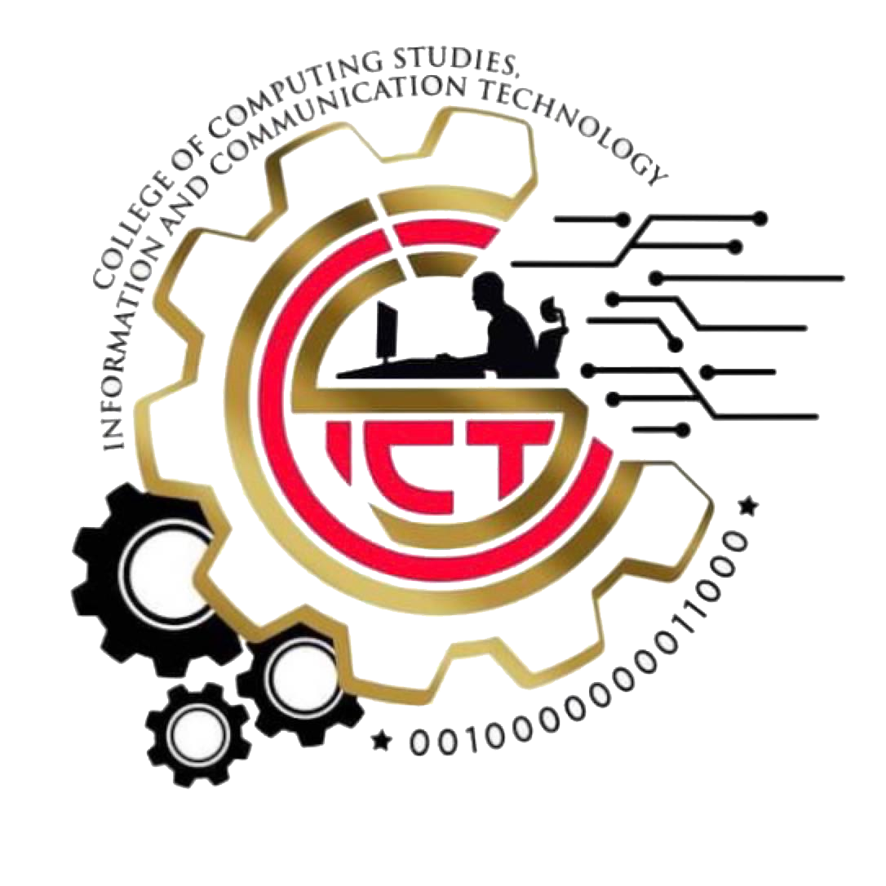

COLLEGE OF COMPUTING STUDIES,
INFORMATION AND COMMUNICATION TECHNOLOGY
In line with the Isabela State University’s vision and mission to be the University of first choice, the College of Computing Studies, Information and Communication Technology is committed to:
Provide future IT and Engineering professionals with the required industry standard skillset and competencies using current relevant curricula;
Develop a research-oriented graduates equipped with theoretical and technical expertise to produce a publishable research output needed by the community;
Give actual training experiences in community development through extension and outreach activities; and
Produce technologically oriented, globally competent and effective IT and Engineering graduates imbued with moral values.
The Bachelor of Science in Information Technology (BSIT) program is a four-year degree program which focuses on the study of computer utilization and computer software to plan, install, customize, operate, manage, administer and maintain information technology infrastructure. It likewise deals with the design and development of computer-based information systems for real-world business solutions.
The program prepares students to become IT professionals with primary competencies in the areas of systems analysis and design, applications development, database administration, network administration, and systems implementation and maintenance.
Computer Programming
Human-Computer Interaction
Discrete Mathematics
Data Structures and Algorithms
Information Management
Networking
Advanced Database System
System Integration and Architecture
Information Assurance and Security
System Administration and Maintenance
Capstone Project Research
Technical support specialist
Web developer
App developer
Data analyst
Systems analyst
Quality assurance analyst
Systems engineer
Web designer

Bachelor of Science in Computer Science (BSCS) is a four-year program that includes the study of computing concepts and theories, algorithmic foundations, and new developments in computing. The program prepares its students to design and create algorithmically complex software and develop new and effective algorithms for solving computing problems.
Introduction to Computing
Fundamentals of Programming
Discrete Structure
Data Structures and Algorithms
Calculus with Analytic Geometry
Software Engineering
Application Development and Emerging Technologies
Human Computer Interaction
Operating Systems
Computer Science Thesis Writing
Artificial intelligence and machine learning engineer
Business analyst
Cloud computing engineer
Computer science professor
Computer scientist or computer science researcher
Data scientist
Database administrator
Database administrator
Full-stack developer
Information technology specialist
Mobile application designer or developer
Software developer
Software engineer
Software quality assurance manager
Software tester
Systems analyst
Web developer